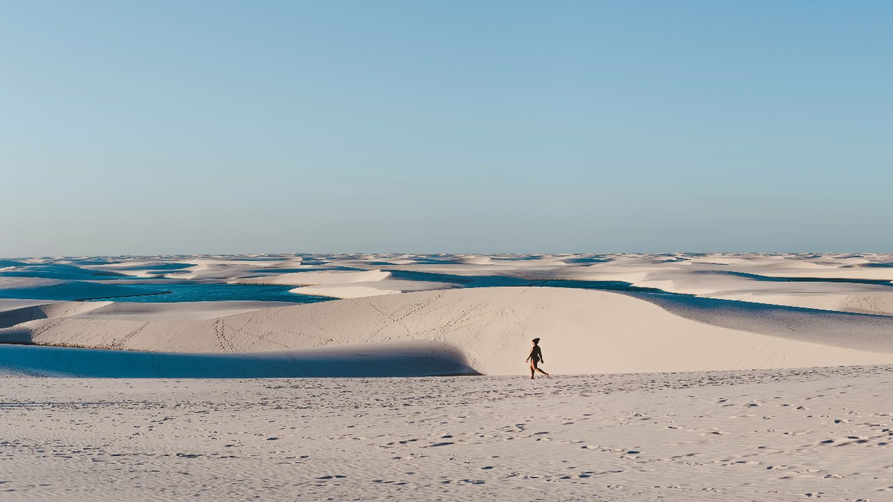
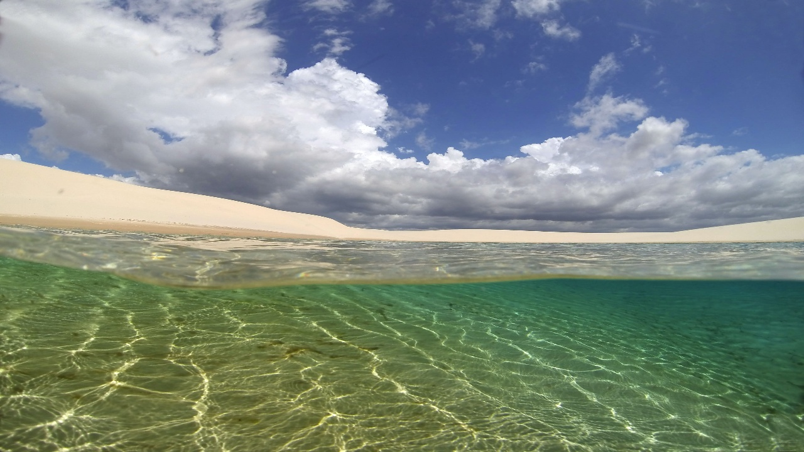
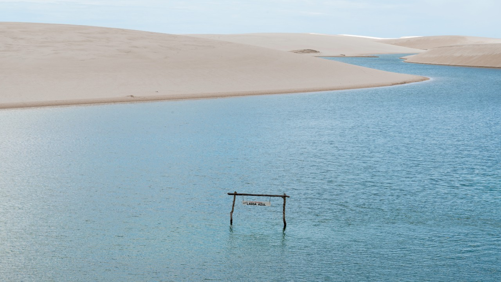
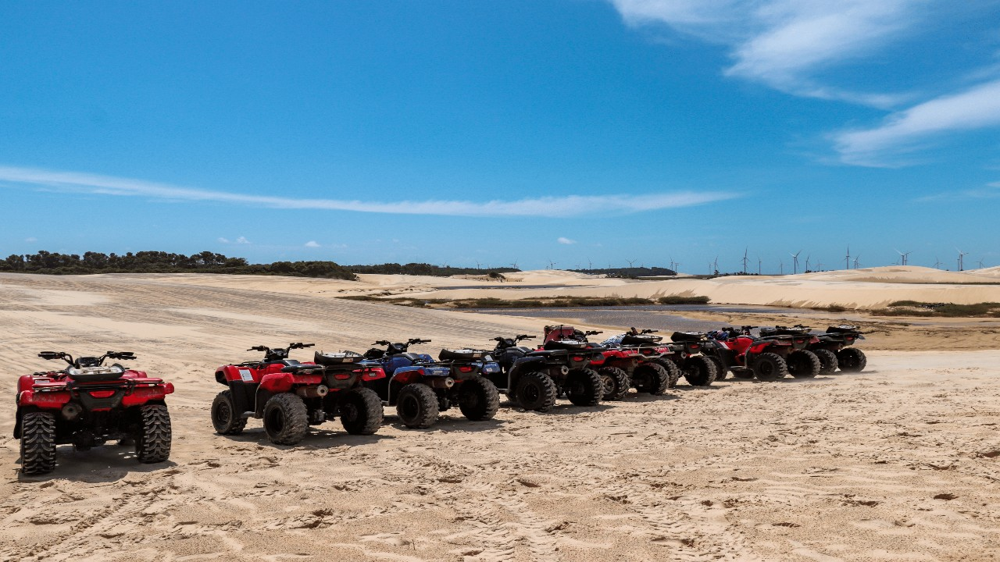

Bate e volta canto do atins
Partiremos de São Luís em direção a Barreirinhas por volta das 04:00 da manhã, utilizando táxi, van ou micro-ônibus. Os horários de embarque serão comunicados no dia anterior à viagem. Após o último embarque, a jornada terá uma duração aproximada de 4 horas, com uma breve parada de 20 minutos durante o percurso para um lanche e outros preparativos.
Ao chegar no receptivo em Barreirinhas, será possível trocar de roupa e receber informações cruciais sobre o trajeto. Na manhã, por volta das 08:15, iniciaremos o passeio para Atins em uma empolgante Toyota 4x4, percorrendo cerca de 1 hora até alcançar o pitoresco povoado de Atins. Lá, teremos a oportunidade de desfrutar de banhos nas praias desertas da região.
Continue lendo.Bate e volta com por do sol

Partida matinal, entre 06:30 e 08:00, em van ou micro-ônibus com embarque direto no seu hotel. A jornada de São Luís para Barreirinhas terá uma duração de cerca de 4 horas, com uma pausa rápida de 20 minutos no caminho para um lanche revigorante (não incluído).
Por volta do meio-dia, alcançaremos a encantadora cidade de Barreirinhas. Todos os clientes serão recebidos em nossa agência local, onde terão todo o suporte necessário de nossa equipe. Após a chegada, haverá um tempo livre para solicitar o almoço. Após o almoço e a aquisição das roupas de banho, receberemos uma breve explicação sobre o trajeto. Em seguida, embarcaremos na robusta Toyota 4x4, passando pelo supermercado para comprar água e lanches antes de iniciar o passeio.
Continue lendo.Bate e volta duas lagoas
Inicie sua jornada matinal entre 03:00 e 04:30, com embarque diretamente do hotel em táxi, van ou micro-ônibus, rumo a Barreirinhas. A viagem a partir de São Luís terá uma duração de cerca de 4 horas, incluindo uma breve parada de 20 minutos para um lanche revigorante (não incluso).
Ao chegar em Barreirinhas por volta das 09:30, todos os clientes serão recebidos em nossa agência local, onde terão suporte total da nossa equipe. Após a chegada e a preparação com roupas de banho, receberemos uma breve explicação sobre o trajeto, embarcando por volta das 09:00. Após a última parada na pousada, a Toyota Jardineira (conhecida como tal) fará uma pequena pausa em um supermercado para adquirir água, lanches, entre outros.
Continue lendo.Bate e volta Lagoa azul
Prepare-se para uma jornada emocionante pelos Lençóis Maranhenses! Partiremos pela manhã, entre 03:00 e 04:30, em táxi, van ou micro-ônibus, com embarque diretamente no seu hotel. A viagem de São Luís para Barreirinhas terá uma duração aproximada de 4 horas, incluindo uma breve pausa de 20 minutos no caminho para um lanche revitalizante (não incluído).
Chegaremos à encantadora cidade de Barreirinhas por volta das 09:30 da manhã. Na nossa agência local, todos os clientes receberão um atendimento dedicado, contando com o total apoio da nossa equipe. Após a chegada e a preparação com trajes de banho, receberemos uma breve explicação sobre o trajeto. Com todos a bordo da robusta Toyota 4x4, faremos uma parada rápida no supermercado para adquirir água e lanches antes de iniciar nosso passeio.
Continue lendo.Bate e volta quadriciclo
Iniciaremos nossa jornada de São Luís a Barreirinhas por volta das 04:00 da manhã, utilizando táxi, van ou micro-ônibus. Os horários de embarque serão comunicados no dia anterior à viagem. Após o último embarque, a viagem terá uma duração de aproximadamente 4 horas, com uma breve pausa de 20 minutos durante o percurso para um lanche e outros preparativos.
Ao chegar no receptivo em Barreirinhas, teremos a oportunidade de trocar de roupa e receber informações cruciais sobre o trajeto. Pela manhã, entre 08:30 e 09:00, embarcaremos em um emocionante passeio de quadriciclo. Antes da aventura, um breve treinamento nos familiarizará com a máquina e seu manuseio.
Continue lendo.